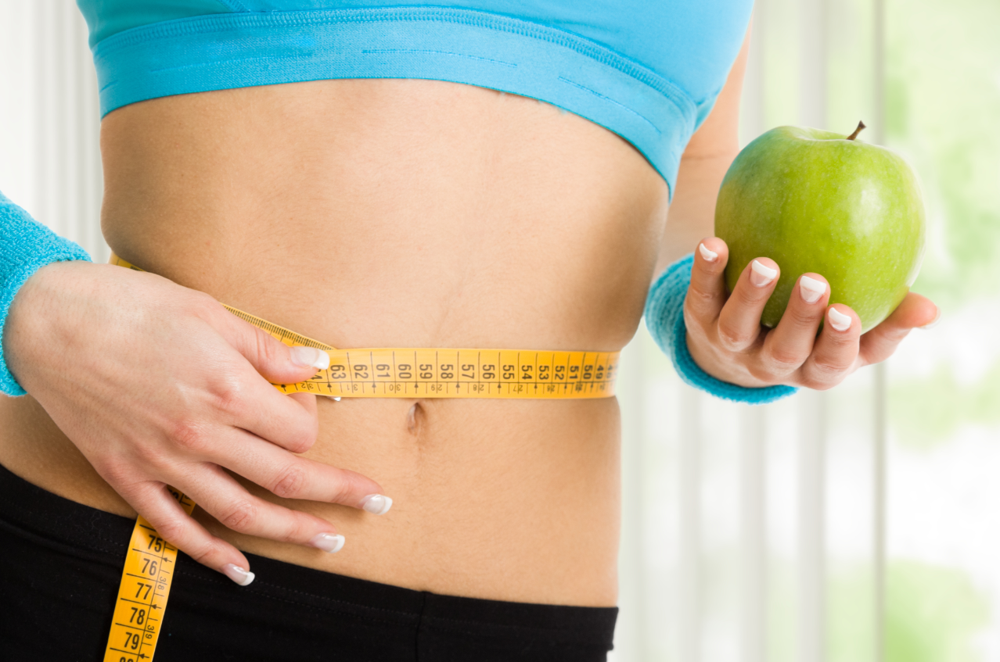

How I Boosted My Metabolism and Transformed My Energy
Hi, I’m Emily. A year ago, I was constantly exhausted, struggling to get through the day. I’d wake up feeling drained, and no matter how much I ate, my energy seemed to vanish by mid-afternoon.
Doctors told me to “exercise more” and “eat better,” but I felt like I was already doing everything right. It wasn’t until I stumbled upon a method to naturally boost my metabolism that everything started to change.
At first, I was skeptical. It seemed too simple to work. But as I started implementing small, consistent changes, I noticed a difference. I felt more awake in the mornings, my workouts became more effective, and the stubborn weight I carried for years began to melt away.
Here are some of the tips I learned along the way:
- Start your day with a glass of warm lemon water to kickstart your digestion.
- Incorporate more protein-rich foods into your meals to fuel your muscles.
- Stay hydrated! Drinking water consistently can make a huge difference.
- Move regularly throughout the day, even if it’s just a 10-minute walk.
- Get quality sleep – it’s a metabolism booster you can’t ignore.
But the real breakthrough came when I discovered a specific method that targets your metabolism directly. It wasn’t about starving myself or spending hours at the gym. It was simple, natural, and surprisingly effective.
If you’re ready to transform your energy, burn calories faster, and feel incredible, this method could be the game-changer you’ve been waiting for.
Click Here to Discover My Secret to a Faster Metabolism!